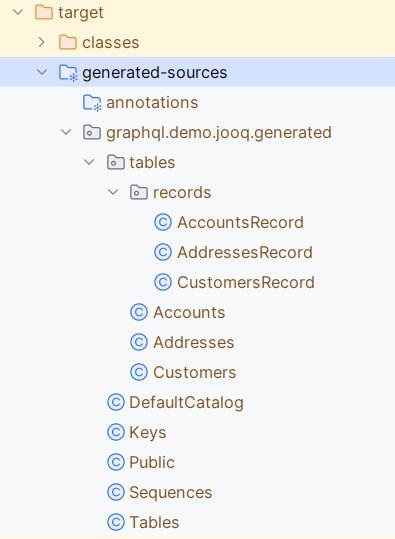

Detailed Step-by-Step Guide
Intro
Welcome to this detailed guide about GraphQL and how to implement a GraphQL service in Java using Spring for GraphQL and JooQ for database access.
We will start with a basic hello world style example, and we will introduce more advanced features progressively. However, this is not a detailed guide about GraphQL, as we will more focus on how to implement it using Spring for GraphQL and JooQ.
The main objective is to highlight some important attention point in the implementation, more specifically related to potential performance issues, and to address them.
Resources
Hello World
Let’s start by creating a simple Hello World style service.
Create the workspace
We will start by creating a new GraphQL service, using Spring Initialzr. You can use it from https://start.spring.io/ or from the IntelliJ "new project" menu.
We will use Java 21, Spring Boot 3.1.5, Maven and a few starters :
-
Web
-
GraphQL
-
DevTools
-
Lombok
To make it a little more interesting, we will also use the "LangChain4J" library, so let’s add it to the dependencies in the pom file.
<dependency>
<groupId>dev.langchain4j</groupId>
<artifactId>langchain4j</artifactId>
<version>0.23.0</version>
</dependency>
<dependency>
<groupId>dev.langchain4j</groupId>
<artifactId>langchain4j-open-ai</artifactId>
<version>0.23.0</version>
</dependency>Create the GraphQL Schema
Now, let’s create a GraphQL Schema file, in the graphql resource folder, and call it demo.
type Query { (1)
demo: String (2)
}| 1 | Query is a special type in GraphQL, it is the entry point in the GraphQL data model. |
| 2 | We simply add an entry "demo" that will return a String. |
Update the properties file
Update the properties file to enable the GraphiQL endpoint and prepare the configuration url for langChain4J to call openAI later on.
spring.graphql.graphiql.enabled=true (1)
demo.openai-proxy-url=http://langchain4j.dev/demo/openai/v1 (2)| 1 | Enable the GraphiQL endpoint |
| 2 | This is the url that will be used by langChain4J to call openAI |
Run the app
We just start the app now, go to the graphiql (http://localhost/graphiql) endpoint and see the default behaviour, which is returning a null for the created endpoint.
This is the default behaviour when no controller is defined.
Create the Controller
Now, let’s creat the DemoController class annotated with @Controller and create a method demo, annotated by @QueryMapping such that Spring will map any call to the demo entry point to this method.
@Controller (1)
@RequiredArgsConstructor
public class DemoController {
private final OpenAiService openAiService;
@QueryMapping (2)
String demo() { (3)
return openAiService.demoWelcomeMessage(); (4)
}
}| 1 | This is a Spring controller |
| 2 | This method will be mapped to an attribute of the Query type from GraphQL schema. By default, the mapped attribute will be the one corresponding to the method name. |
| 3 | Make sure to give a method signature that is compatible with the corresponding definition in the GraphQL schema. |
| 4 | Delegate to the OpenAiService to get a demo message. |
Here, we use LangChain4J library to get a text from openAI, using the OpenAiService
public String demoWelcomeMessage() {
return model.generate(
"""
Write a greeting message for a live coding demo talking about Spring for GraphQL.
The message must be short, no more than 50 words.
""");
}Running the query again will now give the answer from ChatGpt.
{
"data": {
"demo": "\"Welcome to the Spring for GraphQL demo!Get ready to spring into action as we dive into the world of software development with a twist of humor. Let's break some code and have a blooming good time!\"",
}
}A more realistic sample with a Database
Now let’s give a more realistic example, with some data stored in a customer database.
The database has the following tables :
-
A customers table, containing customers with their first name and last name.
-
An addresses table, containing addresses, an address could be shared by multiple customers
-
And an accounts table, containing bank accounts. Each customer could have multiple accounts.
API First
GraphQL promotes the API first approach through its DSL (Domain Specific Language) for designing the API. So, we’ll start the implementation by specifying the API we would like to expose in the GraphQL schema.
type Query {
customers: [Customer]
}
type Customer {
id: ID!
firstName: String!
lastName: String!
address: Address
accounts: [Account]!
}
type Account {
id: ID!
iban: String!
balance: Float!
currency: String!
}
type Address {
streetNumber: String!
streetName: String!
zipCode: String!
city: String!
country: String!
}|
Note the following syntax in GraphQL :
|
Visualize the GraphQL data model using Voyager
One of the advantages of the well-defined GraphQL specification is the possibility to create useful tools around it. Voyager is one these tools, let’s just create a simple html file and see how the schema we just created can be visualised to explore the GraphQL API.
<!doctype html>
<html>
<head>
<link
rel="stylesheet"
href="https://cdn.jsdelivr.net/npm/graphql-voyager/dist/voyager.css"
/> (1)
<script
src="https://cdn.jsdelivr.net/npm/graphql-voyager/dist/voyager.standalone.js">
</script> (1)
</head>
<body>
<div id="voyager">Loading...</div>
<script type="module">
const {voyagerIntrospectionQuery: query} = GraphQLVoyager;
const response = await fetch(
'http://localhost:8082/graphql', (2)
{
method: 'post',
headers: {
Accept: 'application/json',
'Content-Type': 'application/json',
},
body: JSON.stringify({query}),
credentials: 'omit',
},
);
const introspection = await response.json();
// Render <Voyager /> into the body.
GraphQLVoyager.renderVoyager(document.getElementById('voyager'), {
introspection,
});
</script>
</body>
</html>| 1 | Include CSS and Javascript from CDN |
| 2 | Configure the GraphQL endpoint |
Here is a screenshot of the Voyager UI on our basic example :
Datasource and JooQ configuration
Before implementing the API, we need to add a few dependencies to access the Postgres DB. Here, we will use JooQ as the database access library. As we will see later on, this library is a perfect match for GraphQL.
<dependency>
<groupId>org.springframework.boot</groupId>
<artifactId>spring-boot-starter-jooq</artifactId> (1)
</dependency>
<dependency>
<groupId>org.postgresql</groupId>
<artifactId>postgresql</artifactId>
<version>42.6.0</version> (2)
</dependency>| 1 | JooQ Spring Starter |
| 2 | PostgreSql driver |
JooQ code generation
JooQ is based on code generation, from the dabase schema, so we also add a JooQ maven plugin to perform the required code generation.
<plugin>
<groupId>org.jooq</groupId>
<artifactId>jooq-codegen-maven</artifactId>
<version>3.18.6</version>
<executions>
<execution>
<id>jooq-codegen</id>
<phase>generate-sources</phase> (1)
<goals>
<goal>generate</goal>
</goals>
</execution>
</executions>
<configuration>
<!-- Configure the database connection here -->
<jdbc> (2)
<driver>org.postgresql.Driver</driver>
<url>jdbc:postgresql://localhost:5432/graphql-demo</url>
<user>demo</user>
<password>demo</password>
</jdbc>
<generator>
<!-- The default code generator. -->
<name>org.jooq.codegen.JavaGenerator</name>
<database> (3)
<!-- The database type. -->
<name>org.jooq.meta.postgres.PostgresDatabase</name>
<!-- The database schema to be generated -->
<inputSchema>public</inputSchema>
<!-- All elements that are generated from your schema -->
<includes>.*</includes>
</database>
<target> (4)
<!-- The destination package of your generated classes (within the destination directory) -->
<packageName>graphql.demo.jooq.generated</packageName>
<!-- The destination directory of your generated classes. Using Maven directory layout here -->
<directory>target/generated-sources</directory>
</target>
</generator>
</configuration>
</plugin>| 1 | The plugin will be executed during the code-generation phase. |
| 2 | As the code generator will use the database schema data, it requires a configuration to access the database |
| 3 | This section configures what has to be generated |
| 4 | And this section configures where the code will be generated |
|
See JooQ Code Generation documentation for more details and options. |
We can now generate the code, compiling our project using maven.
|
Make sure the generated code is considered as source code by your IDE. |

|
Let’s explore the generated code, it contains
|
The exposed model classes
JooQ generates classes that map the Database model.
On the other hand, we need to return data that maps the GraphQL data model and most of the time, there are differences between these two models.
A good practice is hence to decouple these two models by creating "GraphQL model classes" that are more aligned to the GraphQL data model. This is similar to the DTOs (Data Transfer Object) used in REST services.
So, let’s create a CustomerModel as a simple Java record.
public record CustomerModel(
String id,
String firstName,
String lastName,
String addressId) (1)
{ }| 1 | Note here that the addressId field is not exposed in the GraphQL data model, but it will be used to get the exposed address as we will see later on. |
Similarly, we can already create the other model classes of our GraphQL schema : AddressModel and AccountModel.
CustomerController
To implement the API, we will create a CustomerController class.
@Controller
public class CustomerController {
private final DSLContext dslContext; (1)
public CustomerController(DSLContext dslContext) {
this.dslContext = dslContext;
}
@QueryMapping (2)
List<CustomerModel> customers() { (3)
return dslContext.select(CUSTOMERS.asterisk()) (4)
.from(CUSTOMERS)
.fetch()
.stream()
.map(CustomerModelMapper::mapCustomerRecordToModel) (5)
.toList();
}
}| 1 | The dslContext is the JooQ object that will be used to create SQL queries |
| 2 | The @QueryMapping Spring annotation indicates that this method will be mapped to the corresponding GraphQL attribute on the GraphQL Query type |
| 3 | The method signature must be aligned with the corresponding GraphQL definition |
| 4 | Here, we use the dslContext to create the query on the Customer table and fetch the results |
| 5 | Then we map the returned CustomerRecord to the CustomerModel and return the resulting list. |
To map the CustomerRecord to a CustomerModel, we define a separate helper class CustomerModelMapper.
public static CustomerModel mapCustomerRecordToModel(Record record) {
if (record == null) {
return null;
}
CustomersRecord customerRecord = record.into(CUSTOMERS); (1)
return new CustomerModel( (2)
customerRecord.getId(),
customerRecord.getFirstName(),
customerRecord.getLastName(),
customerRecord.getAddressId()
);
}| 1 | We use the into method to map the generic record to a CustomerRecord, this is the specific record classes generated by JooQ for each table. |
| 2 | We map the JooQ CustomerRecord to our model CustomerModel. |
|
In a similar way, we can implement |
We can now test our service with a simple query :
query {
customers {
firstName
lastName
}
}Fetching the customer’s address
Now, if we try to get customer address data, such as in this query :
query {
customers {
firstName
lastName
address {
streetNumber
streetName
zipCode
city
country
}
}
}All the returned addresses are null by default.
So let’s add a @SchemaMapping to the CustomerController :
@SchemaMapping(typeName = "Customer") (1)
AddressModel address(CustomerModel customer) { (2)
if (customer.addressId() == null) { (3)
return null;
}
return dslContext.selectFrom(ADDRESSES)
.where(ADDRESSES.ID.eq(customer.addressId())) (4)
.fetchOne()
.map(AddressModelMapper::mapAddressRecordToModel); (5)
}| 1 | The @SchemaMapping annotation maps the attributes of a given GraphQL type, passed as argument in the annotation. |
| 2 | The name of the mapped attribute is the method name, by default. Also note here that the current CustomerModel is injected in the method called by Spring. See the Spring documentation on the @SchemaMapping methd signature for more details. |
| 3 | If the customer does not have an addressId, we simply return null, as it has no known address. |
| 4 | We perform a SQL query on the Addresses table with a where clause based on the addressId of the given customer. |
| 5 | Finaly, we map the AddressRecord to an AddressModel using the previously define model mapper. |
We can now run our query again, and it returns the address data, for the customers having an address in the database.
Fetching the customer’s accounts
Similarly, let’s test a query returning the customer’s accounts data, such as this one :
query {
customers {
firstName
lastName
accounts {
iban
balance
currency
}
}
}We get an error, because the GraphQL model defines the accounts attribute as being "non null" (using the '!' syntax in the GraphQL schema) and the current implementation returns null.
To fix this, we define a new @SchemaMapping for the accounts attribute.
@SchemaMapping(typeName = "Customer")
List<AccountModel> accounts(CustomerModel customer) {
return dslContext.selectFrom(ACCOUNTS)
.where(ACCOUNTS.CUSTOMER_ID.eq(customer.id()))
.fetch()
.stream()
.map(AccountModelMapper::mapAccountRecordToModel)
.toList();
}|
Here, the code will never return |
Now, if we execute the query again, we get the list of accounts for each customer.
Adding filtering (using JooQ)
Now let’s add some filtering to filter the customer’s by their names. We start by specifying the filter in the GraphQL schema.
type Query {
customers(filter: CustomerPredicate): [Customer] (1)
}
input CustomerPredicate { (2)
firstName: StringPredicate
lastName: StringPredicate
}
input StringPredicate { (3)
is: String
isNot: String
contains: String
startsWith: String
endsWith: String
isOneOf: [String]
}| 1 | Any attribute in a GraphQL schema can declare input parameters. We use it to pass an optional filter parameter. |
| 2 | The CustomerPredicate is an input type in GraphQL, it declares the different filter input we will accept for filtering our customers. |
| 3 | We use a generic predicate on strings. |
Let’s add Java classes to map these new types in our model package :
public record CustomerPredicate(
StringPredicate firstName,
StringPredicate lastName) {
}public record StringPredicate(
String is,
String isNot,
List<String> isOneOf,
String contains,
String startsWith,
String endsWith) {
}Now, we can modify our CustomerController to use the filter.
@QueryMapping
List<CustomerModel> customers(@Argument CustomerPredicate filter) { (1)
@NotNull SelectJoinStep<Record> query = dslContext.select(CUSTOMERS.asterisk())
.from(CUSTOMERS); (2)
if (filter != null) {
filter.applyOn(query); (3)
}
return query
.fetch()
.stream()
.map(CustomerModelMapper::mapCustomerRecordToModel)
.collect(toList());
}| 1 | The GraphQL parameter is passed to the method, using the @Argument annotation |
| 2 | We split the creation of the query, to be able to add the filter later on |
| 3 | If a filter is provided, we apply the filter on the query, using the applyOn method. |
Then we use JooQ to specify the where clause to be applied on the query.
public SelectJoinStep<Record> applyOn(SelectJoinStep<Record> query) {
ifNonNull(firstName, firstName -> query.where(firstName.conditions(CUSTOMERS.FIRST_NAME))); (1)
ifNonNull(lastName, lastName -> query.where(lastName.conditions(CUSTOMERS.LAST_NAME)));
return query; (1)
}| 1 | If the filter parameter is provided, we apply the corresponding condition on the query, using JooQ where method. |
The actual conditions being provided by our generic StringPredicate class.
public List<Condition> conditions(TableField field) {
return Stream.of(
mapIfNonNull(is, is -> field.eq(is)),
mapIfNonNull(isNot, isNot -> field.ne(isNot)),
mapIfNonNull(startsWith, startsWith -> field.startsWith(startsWith)),
mapIfNonNull(endsWith, endsWith -> field.endsWith(endsWith)),
mapIfNonNull(contains, contains -> field.contains(contains)),
mapIfNonNull(isOneOf, isOneOf -> field.in(isOneOf)))
.filter(Objects::nonNull)
.toList();
}Now, we can try our filter using different queries such as :
query {
customers(filter: {
firstName: {isOneOf: ["Dane", "Maura"]}
}) {
firstName
lastName
}
}Compose data coming from another backend
Now, let’s add another attribute to illustrate how easy it is to combine multiple backends and expose their data as a single data model through GraphQL.
We add a greeting argument to our customer.
type Customer {
greeting: String!
}And we implement it using a CustomerGreetingController and our OpenAIService :
@SchemaMapping(typeName = "Customer")
String greeting(CustomerModel customer, DataFetchingEnvironment env) {
return openAiService.greeting(customer.firstName());
}Finally, let’s implement the greeting service, calling open AI using the langChain4J library.
public static final PromptTemplate GREETING_PROMPT_TEMPLATE = PromptTemplate.from("write a greeting message for {{it}}. The message must be short, no more than 10 words");
public String greeting(String name) {
return model.generate(GREETING_PROMPT_TEMPLATE.apply(name).text());
}We can now mix data coming from different backend in a single GraphQL query such this one :
query {
customers {
firstName
lastName
greeting
accounts {
iban
balance
currency
}
}
}Performance analysis
Typical performance issues when using microservices and REST apis are :
-
over fetching : the available service might return some data that the consumer doesn’t need
-
under fetching : the available service might not return all the required data, implying that the consumer need to call other services to get the required data.
-
the query N + 1 issue : is actually a consequence of under-fetching leading to the explosion of the number of service calls.
For example, in our demo, if a consumer wants to get the customers with their address, accounts and greeting message, the sequence of calls will often be something like :
This could lead to :
-
1 Query to get "N" customers
-
N Queries to get each customer’s address
-
N Queries to get each customer’s accounts
-
N Queries to get each customer’s greeting message
GraphQL allows to get all the required data in a single round trip, which solves these issues, as the consumer get
-
only the required data,
-
all the required data,
-
in a single round trip
However, the query N + 1 issue did not really disappear, as it is still present in the backend access to the DB or other backends used to get the data our current GraphQL service implementation.
So, let’s see how we can improve our implementation.
Performance optimisations using JooQ
JooQ is a perfect match for GraphQL, as it allows to build SQL queries dynamically, based on the GraphQL query. This will be very useful to optimise our service.
Optimising the address query
Let’s start by optimising the address query. Instead of querying the address table for each customer, we can use an SQL join to get all the addresses in a single query.
@QueryMapping
List<CustomerModel> customers(@Argument CustomerPredicate filter, DataFetchingFieldSelectionSet selectionSet) { (1)
SelectSelectStep<Record> select = dslContext.select(CUSTOMERS.asterisk());
if (selectionSet.contains("address")) { (2)
select.select(ADDRESSES.asterisk());
}
SelectJoinStep<Record> query = select.from(CUSTOMERS);
if (selectionSet.contains("address")) { (3)
query.leftJoin(ADDRESSES).on(ADDRESSES.ID.eq(CUSTOMERS.ADDRESS_ID));
}
if (filter != null) {
filter.applyOn(query);
}
return query
.fetch()
.stream()
.map(CustomerModelMapper::mapCustomerRecordToModel)
.toList();
}| 1 | We can inject the DataFetchingFieldSelectionSet in the method, to get the list of fields requested in the GraphQL query. |
| 2 | If the address field is requested, we add the address fields to the select clause of the query. |
| 3 | If the address field is requested, we add a join to the address table. |
We can now test our query again, and we see the executed query is using a join if the address field are requested (see the JooQ Logs to see the details of the executed SQL queries).
We still need to modify the Model and the mapping to take into account the new address fields.
public record CustomerModel(
String id,
String firstName,
String lastName,
AddressModel address) { (1)
}| 1 | The address attribute is now an AddressModel so it will be used by the default GraphQL mapping to mapp the address fields. We do not need anymore to keep the addressId as it was only used to create the SQL query to get the address later on. |
public static CustomerModel mapCustomerRecordToModel(Record record) {
if (record == null) {
return null;
}
AddressModel addressModel = AddressModelMapper.mapAddressRecordToModel(record.into(Tables.ADDRESSES)); (1)
return new CustomerModel( (2)
customerRecord.getId(),
customerRecord.getFirstName(),
customerRecord.getLastName(),
addressModel,
accounts
);
}| 1 | We map the address fields to an AddressModel using the AddressModelMapper. |
| 2 | We pass the AddressModel to the CustomerModel constructor. |
We can now test our query again, to see if the address data is returned.
But we get an error, because when there is no address, the address fields returned by the query are null, and we defined them as non-null in the GraphQL schema.
Let’s fix this.
public static AddressModel mapAddressRecordToModel(Record record) {
if (record == null) {
return null;
}
AddressesRecord addressRecord = record.into(ADDRESSES);
if (addressRecord.getId() == null) { (1)
return null;
}
return new AddressModel(
addressRecord.getStreetNumber(),
addressRecord.getStreetName(),
addressRecord.getZipCode(),
addressRecord.getCity(),
addressRecord.getCountry()
);
}| 1 | We check if the address id is null, and if it is the case, we return null. |
We can now test our query again, and we see the address data is returned, and we execute only one SQL query.
Optimising the accounts query
Now, let’s optimise the accounts query. But here, it is a little different as the relation is one-to-many, so we cannot use a join like for the address.
JooQ has a solution for this, using the multiset feature.
@QueryMapping
List<CustomerModel> customers(@Argument CustomerPredicate filter, DataFetchingFieldSelectionSet selectionSet) {
SelectSelectStep<Record> select = dslContext.select(CUSTOMERS.asterisk());
if (selectionSet.contains("address")) {
select = select.select(ADDRESSES.asterisk());
}
if (selectionSet.contains("accounts")) { (1)
select = select.select(
DSL.multiset( (2)
dslContext
.selectFrom(ACCOUNTS)
.where(ACCOUNTS.CUSTOMER_ID.eq(CUSTOMERS.ID))) (3)
.as("Accounts_Multiset")); (4)
}
...
}| 1 | If the accounts field is requested, we add a multiset field to the select clause of the query. |
| 2 | The multiset feature of JooQ allows to create a sub-query that will return a list of accounts for each customer and store it in the result as a single (json) field. |
| 3 | We create the sub-query, using the dslContext. |
| 4 | We give a name to the multiset field, that will be used to map the result to a list of AccountModel. |
If we run our query and look at the logs, we see that JooQ format the list of accounts as a JSON array.
+----+----------+----------+-----------+--------------------------------------------------+
|id |first_name|address_id|last_name |Accounts_Multiset |
+----+----------+----------+-----------+--------------------------------------------------+
|0 |Season |0 |Kling |[(0, MR4397602666149964536457958, -39681.0, KID...|
|1 |Maura |0 |Marks |[(3, KW52VCGU0Cp7MFCZ0Di10PUGgTfUCp, 421570.0, ...|
|2 |Perry |{null} |Cruickshank|[(4, FR2497686504425I144umb2YJ34, 442239.0, MRU...|
|3 |Dane |{null} |Jaskolski |[(6, SV42IOXV33200864928287361387, 624348.0, PY...|
|4 |Charisse |2 |Braun |[(7, IQ39INEQ957796527837825, 753317.0, SLL, 4)] |
+----+----------+----------+-----------+--------------------------------------------------+We can now adapt the CustomerModel to include the list of accounts.
public record CustomerModel(
String id,
String firstName,
String lastName,
AddressModel address,
List<AccountModel> accounts) (1)| 1 | We add the accounts attribute to the CustomerModel. |
Then, we adapt the mapping to take into account the new accounts fields.
public static CustomerModel mapCustomerRecordToModel(Record record) {
if (record == null) {
return null;
}
AddressModel addressModel = AddressModelMapper.mapAddressRecordToModel(record.into(Tables.ADDRESSES));
List<AccountModel> accounts = Collections.emptyList();
if (record.field("Accounts_Multiset") != null) {
accounts = AccountModelMapper.mapAccountRecordToModel((Result<Record>) record.get("Accounts_Multiset")); (1)
}
return new CustomerModel(
record.get(CUSTOMERS.ID),
record.get(CUSTOMERS.FIRST_NAME),
record.get(CUSTOMERS.LAST_NAME),
addressModel,
accounts (2)
);
}| 1 | If there is a sub-query result, we get it by its field name, cast it to a Result<Record> and pass it to the AccountModelMapper to get the list of accounts. |
| 2 | We pass the accounts to the CustomerModel constructor. |
public static List<AccountModel> mapAccountRecordToModel(Result<Record> accountsMultiset) {
return accountsMultiset.stream() (1)
.map(AccountModelMapper::mapAccountRecordToModel) (2)
.toList();
}| 1 | We stream the result of the sub-query |
| 2 | And we map each AccountRecord to an AccountModel. |
That’s it! We can run our query again, and we see the accounts data is returned, and we still execute only one SQL query !
Some refactoring
To get cleaner code, we can now refactor the code a little bit.
Let’s come back to our CustomerController, and extract the query creation in a separate methods to make the code more readable.
@QueryMapping
List<CustomerModel> customers(@Argument CustomerPredicate filter, DataFetchingFieldSelectionSet selectionSet) {
SelectSelectStep<Record> select = selectStep(selectionSet); (1)
SelectJoinStep<Record> query = joinStep(selectionSet, select); (2)
whereStep(filter, query); (3)
return executeAndMap(query); (4)
}| 1 | Select the fields to be returned in the query, depending on the selection set |
| 2 | Create the join step, depending on the selection set |
| 3 | Apply the filter, if any |
| 4 | Fetch the results and map them to the CustomerModel |
In a similar way, we can refactor the extracted selectStep method to clearly split the different parts of it
private SelectSelectStep<Record> selectStep(DataFetchingFieldSelectionSet selectionSet) {
SelectSelectStep<Record> select = selectCustomers();
selectAddresses(selectionSet, select);
selectAccounts(selectionSet, select);
return select;
}Let’s now have a deeper look at the selectCustomers method.
private SelectSelectStep<Record> selectCustomers() {
SelectSelectStep<Record> select = dslContext.select(CUSTOMERS.asterisk());
return select;
}Here, we have a very basic example, but in a real implementation, the use of the asterisk method to read all column of the table might lead to some performance issue, as there can be many columns, some of them potentially containing large data.
In addition, maybe only a subset of these columns are requested and so, we are facing the so-called over-fetching issue as we get more data than needed.
Let’s illustrate here, how we can improve this by passing the selectionSet to this method:
private SelectSelectStep<Record> selectStep(DataFetchingFieldSelectionSet selectionSet) {
SelectSelectStep<Record> select = selectCustomers(selectionSet); (1)
selectAddresses(selectionSet, select);
selectAccounts(selectionSet, select);
return select;
}
@NotNull
private SelectSelectStep<Record> selectCustomers(DataFetchingFieldSelectionSet selectionSet) {
SelectSelectStep<Record> select = dslContext.select(); (2)
if (selectionSet.contains("id")) {
select = select.select(CUSTOMERS.ID); (3)
}
if (selectionSet.contains("firstName")) {
select = select.select(CUSTOMERS.FIRST_NAME); (3)
}
if (selectionSet.contains("lastName")) {
select = select.select(CUSTOMERS.LAST_NAME); (3)
}
return select;
}| 1 | We pass the selectionSet to the selectCustomers method |
| 2 | We create an "empty" select |
| 3 | For each column, we select it only if it is requested in the GraphQL query. |
With this implementation, we will only read the minimum data needed by the GraphQL query that is processed. For example, this query
query {
customers {
firstName
}
}Will only read a single column :
Executing query : select "public"."customers"."first_name" from "public"."customers"
Fetched result : +----------+
: |first_name|
: +----------+
: |Season |
: |Maura |
: |Dane |
: |Charisse |
: |Rocco |
: +----------+
: |...record(s) truncated...
Fetched row(s) : 10This allows to address the over-fetching issue in database accesses.
Improve filtering based on joined data
Fetching the address data using a join also allows to easily add new filtering capabilities to our GraphQL service:
input CustomerPredicate {
firstName: StringPredicate
lastName: StringPredicate
address: AddressPredicate (1)
}
input AddressPredicate { (2)
streetNumber: StringPredicate
streetName: StringPredicate
zipCode: StringPredicate
city: StringPredicate
country: StringPredicate
}| 1 | We add an AddressPredicate to the CustomerPredicate |
| 2 | We define the different conditions that can be expressed on the customer address in the AddressPredicate, (re)using the generic StringPredicate previously used. |
The AddressPredicate is implemented in Java as follows:
public record AddressPredicate(
StringPredicate streetNumber,
StringPredicate streetName,
StringPredicate zipCode,
StringPredicate city,
StringPredicate country
) { (1)
public SelectJoinStep<Record> applyOn(SelectJoinStep<Record> query) { (2)
ifNonNull(streetNumber, streetNumber -> query.where(streetNumber.conditions(ADDRESSES.STREET_NUMBER)));
ifNonNull(streetName, streetName -> query.where(streetName.conditions(ADDRESSES.STREET_NAME)));
ifNonNull(zipCode, zipCode -> query.where(zipCode.conditions(ADDRESSES.ZIP_CODE)));
ifNonNull(city, city -> query.where(city.conditions(ADDRESSES.CITY)));
ifNonNull(country, country -> query.where(country.conditions(ADDRESSES.COUNTRY)));
return query;
}
}| 1 | We create a Java Record mapping the GraphQL input type for the AddressPredicate. |
| 2 | We implement an applyOn method taking a query as input and configuring a where clause to map the condition expressed using GraphQL to SQL. |
public record CustomerPredicate(
StringPredicate firstName,
StringPredicate lastName,
AddressPredicate address) { (1)
public void applyOn(SelectJoinStep<Record> query) {
ifNonNull(firstName, firstName -> query.where(firstName.conditions(CUSTOMERS.FIRST_NAME)));
ifNonNull(lastName, lastName -> query.where(lastName.conditions(CUSTOMERS.LAST_NAME)));
ifNonNull(address, address -> address.applyOn(query)); (2)
}
}| 1 | In the CustomerPredicate, we add the AddressPredicate to map the (optional) address predicate inputs. |
| 2 | If some address predicate have been defined, we apply them on the query, using the applyOn method. |
Now we can use the address predicate in our queries like this :
{
customers(filter: {
address: {
country: {is: "Cuba"}}}) {
firstName
address {
city
country
}
}
}|
As we currently only add the join with the addresses table if the query returns some address fields, a query like this will throw an error : |
To fix this, we need to adapt the CustomerController:
private static void joinAddresses(CustomerPredicate filter, DataFetchingFieldSelectionSet selectionSet, SelectJoinStep<Record> query) { (1)
if (selectionSet.contains("address") ||
(filter != null && filter.address() != null)) { (2)
query.leftJoin(ADDRESSES).on(ADDRESSES.ID.eq(CUSTOMERS.ADDRESS_ID));
}
}| 1 | The joinAddresses method takes both the filter and selectionSet as input. |
| 2 | In addition to test if the address fields are part of the selectionSet it also tests if the address predicate is used in the provided filter. |
That way, if we have a query like the one above, the query will only select the firstName column on the customers table, but it will use a join with addresses table and where clause filtering customers based on their address.
Executing query : select "public"."customers"."first_name" from "public"."customers" left outer join "public"."addresses" on "public"."addresses"."id" = "public"."customers"."address_id" where "public"."addresses"."country" = ?
-> with bind values : select "public"."customers"."first_name" from "public"."customers" left outer join "public"."addresses" on "public"."addresses"."id" = "public"."customers"."address_id" where "public"."addresses"."country" = 'Cuba'
Fetched result : +----------+
: |first_name|
: +----------+
: |Season |
: |Maura |
: +----------+
Fetched row(s) : 2Optimising the greeting query using Dataloaders
Now, let’s optimise the greeting query.
As we can see from the logs, the greeting query is calling the OpenAI service for each customer, which is not optimal.
Call openAI with name: Season
Call openAI with name: Maura
Call openAI with name: Dane (1)
Call openAI with name: Charisse
Call openAI with name: Rocco
Call openAI with name: Leon
Call openAI with name: Hugh
Call openAI with name: Frances
Call openAI with name: Lawana
Call openAI with name: Dane (1)| 1 | Also note that there can be multiple calls with the same input, which is usually also a potential performance issue. |
The idea here would be to batch the calls to the OpenAI service, to get the greeting messages for all the customers in a single call.
For this, we will use the Dataloader mechanism, that is a common pattern in GraphQL.
So let’s change the schema mapping for the greeting attribute :
@SchemaMapping(typeName = "Customer")
CompletableFuture<String> greeting(CustomerModel customer, DataFetchingEnvironment env) { (1)
DataLoader<String, String> dataLoader = env.getDataLoader(GREETING_DATALOADER); (2)
return dataLoader.load(customer.firstName()); (3)
}| 1 | The mapping now returns a CompletableFuture<String>. When this mapping will be called, it doesn’t answer immediately. Instead, it will delegate to an asynchronous dataloader. |
| 2 | We get the dataloader from the DataFetchingEnvironment using its name. |
| 3 | And we call the dataloader to get a completable future of the greeting for the current customer. |
Now, let’s create the dataloader.
@Service
@RequiredArgsConstructor
public class CustomerGreetingDataloader {
public static final String GREETING_DATALOADER = "GREETING_DATALOADER";
private final OpenAiService openAiService;
private final BatchLoaderRegistry batchLoaderRegistry;
@PostConstruct
void initDataLoader() { (1)
batchLoaderRegistry.forTypePair(String.class, String.class)
.withName(GREETING_DATALOADER) (2)
.withOptions(newOptions()
.setMaxBatchSize(5) (3)
)
.registerBatchLoader((List<String> names, BatchLoaderEnvironment env)
-> generateGreetings(names)); (4)
}
private Flux<String> generateGreetings(List<String> names) { (5)
CompletableFuture<List<String>> futureList =
supplyAsync(() -> openAiService.greetings(names), (6)
newVirtualThreadPerTaskExecutor()); (7)
return mapToFlux(futureList); (8)
}| 1 | At startup, we initialize the dataloader, by registering it in the batchLoaderRegistry. |
| 2 | We give it a name |
| 3 | And we set the maximum batch size, to limit the number of data that will be processed by the dataloader in a single call. |
| 4 | We provide a function that will be called by the dataloader when it is triggered. |
| 5 | First note that the function returns a Flux<String> and not a list of Strings (greetings). The GraphQL dataloaders, in addition to process data by "batch", also process data asynchronously, and the Spring layer uses the reactive Flux and Mono for this. |
| 6 | We use a CompletableFuture to call the OpenAI service asynchronously, giving a list of names as input. |
| 7 | Also note here that we use a VirtualThreadPerTaskExecutor to benefit from Java 21 Virtual threads. |
| 8 | Finally, we convert the CompletableFuture to a Flux. |
We can now test our query again, and we see the greeting data is returned, and we execute only two calls to the OpenAI service.
Call openAI with names: [Season, Maura, Dane, Charisse, Rocco] on thread VirtualThread[#66]/runnable@ForkJoinPool-1-worker-1 (1)
Call openAI with names: [Leon, Hugh, Frances, Lawana] on thread VirtualThread[#72]/runnable@ForkJoinPool-1-worker-2 (2)| 1 | We have a batch limit of 5, and we have 10 customers in DB. So the first call contains 5 names. |
| 2 | Note that the second call contains only 4 names. This is because the dataloader, by default, will cache the service calls, it does not call the API twice with the same input ("Dane" in our case). |
After all these optimisations we successfully optimised the performance of our GraphQL service:
Conclusions
GraphQL and Spring for GraphQL offer a very flexible approach to implement data access services.
Optimising such a service performance can be done using the Dataloader mechanism, allowing to address the Query N + 1 issue :
-
It "Batches" backend calls
-
It "Caches" backend calls for same input
-
It executes Asynchronously allowing parallel calls and the use Java 21 Virtual Threads.
JooQ Dynamic queries are a perfect match for GraphQL implementation! It allows to
-
Join tables when needed
-
Select a tree of data using the Multiset feature
-
Select only the required fields
-
Manage filtering of data by mapping query inputs to where clause
All this allows to fine tune the GraphQL performance when needed. But don’t forget the famous quote from D. Knuth.

|
— D. Knuth
|
As suggested by D. Knuth, we should not always try to optimise the code from the start as it complexifies it.
However, there is a good opportunity of performance improvement applying the strategies explained in this demo.